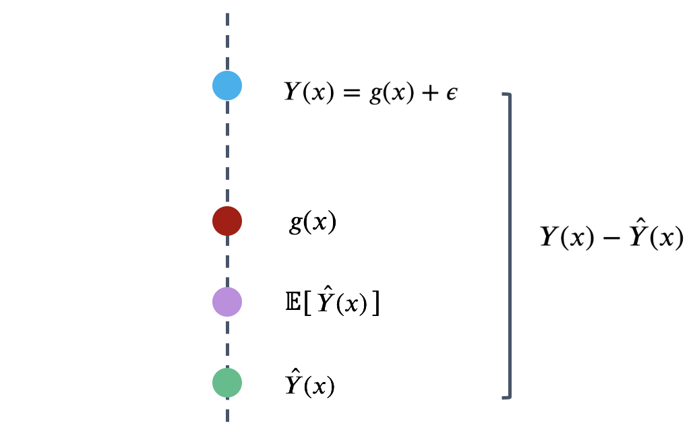
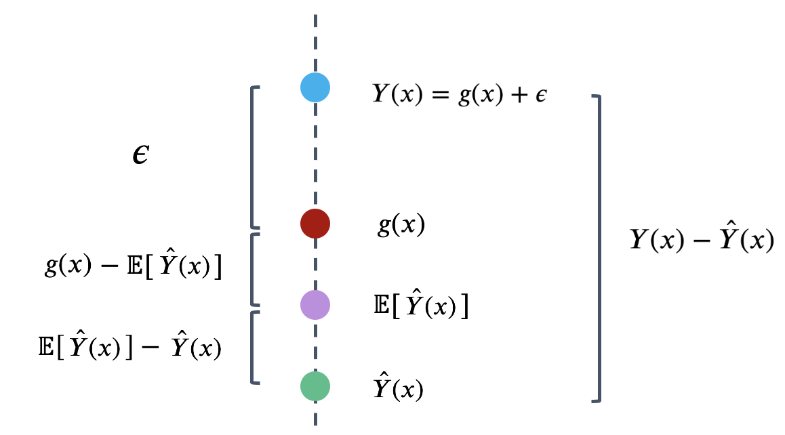
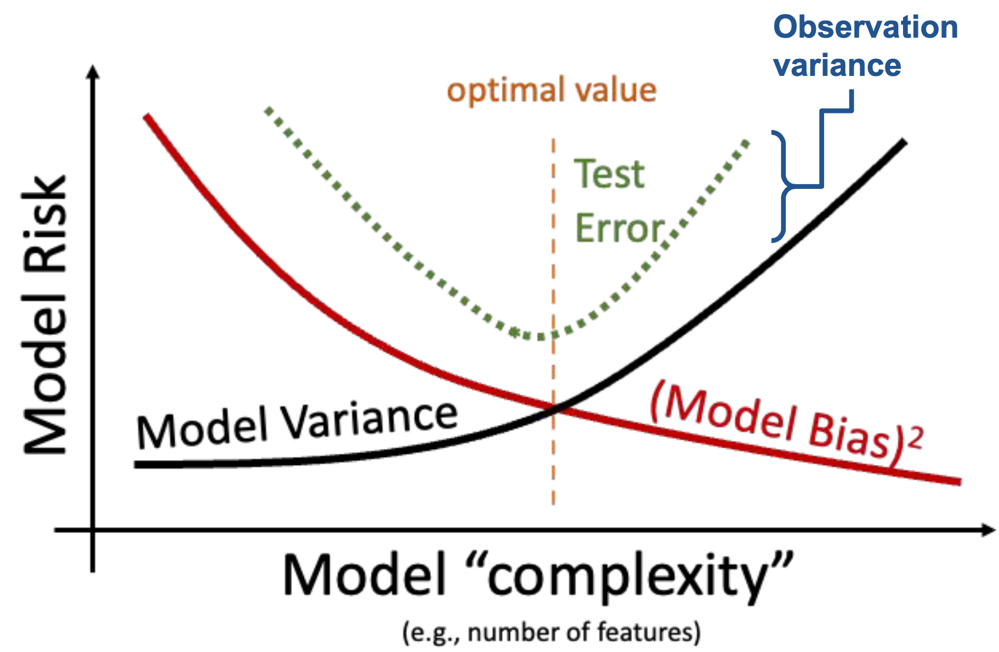
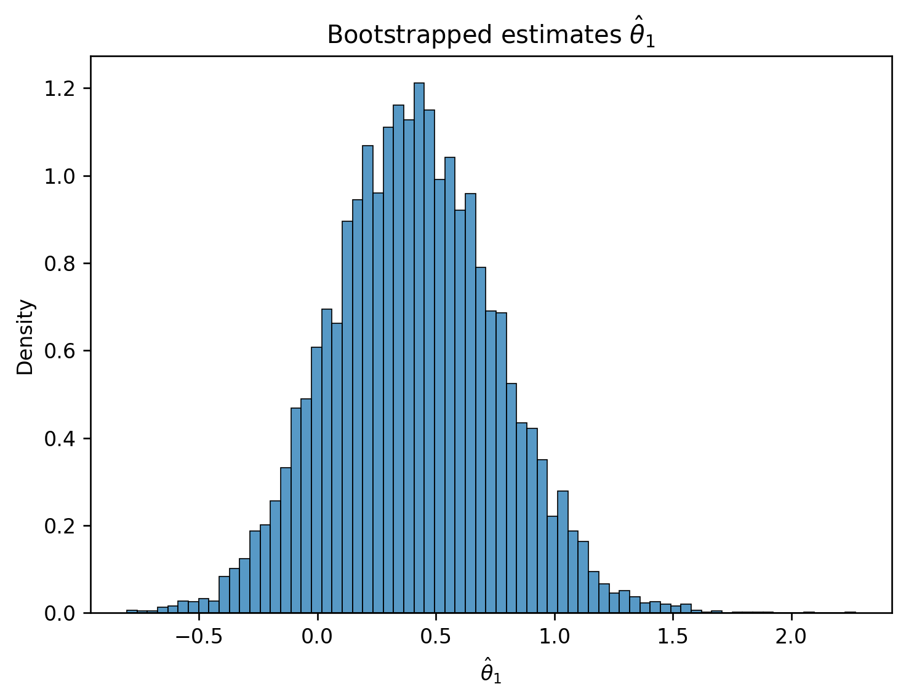
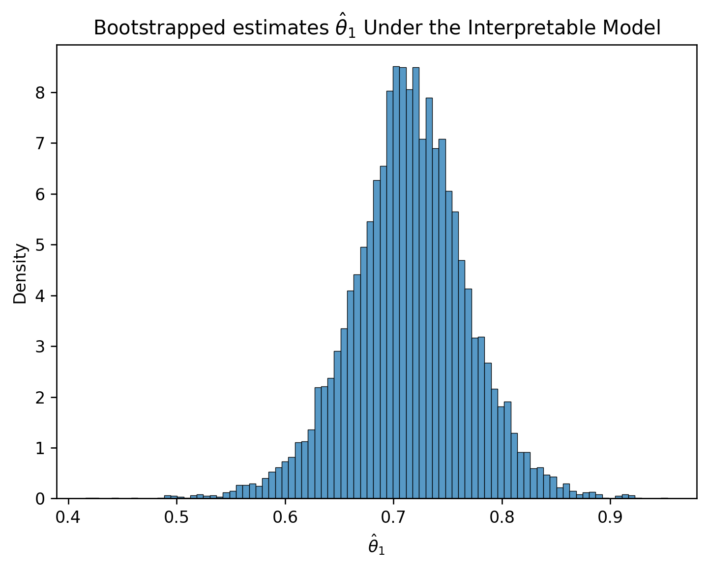
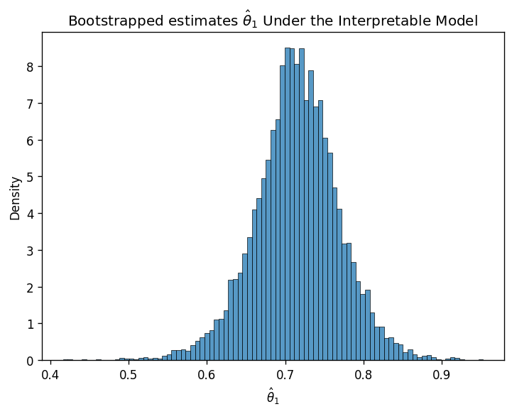
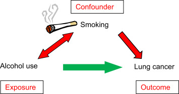
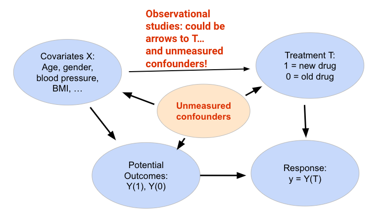
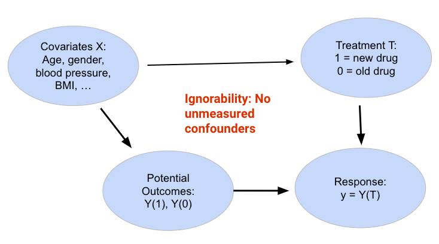

import pandas as pd
eggs = pd.read_csv("data/snowy_plover.csv")
eggs.head(5)| egg_weight | egg_length | egg_breadth | bird_weight | |
|---|---|---|---|---|
| 0 | 7.4 | 28.80 | 21.84 | 5.2 |
| 1 | 7.7 | 29.04 | 22.45 | 5.4 |
| 2 | 7.9 | 29.36 | 22.48 | 5.6 |
| 3 | 7.5 | 30.10 | 21.71 | 5.3 |
| 4 | 8.3 | 30.17 | 22.75 | 5.9 |
Last time, we introduced the idea of random variables and its affect on the observed relationship we use to fit models.
In this lecture, we will explore the decomposition of model risk from a fitted model, regression inference via hypothesis testing and considering the assumptions we make, and the environment of understanding causality in theory and in practice.
Recall the model and the data we generated from that model from the last section:
\[\text{True relationship: }Y = g(x)\]
\[\text{Observed relationship: }Y = g(x) + \epsilon\]

Remember we can only observe our random sample of data, represented by the blue points above. From this sample, we want to estimate the true relationship \(g\). We do this by constructing the model \(\hat{Y}(x)\) to estimate \(g\).

Recall that the observed relationship and our fitted model are random. With this random variables framework in hand, we’re now ready to understand how model complexity can fine-tune our model’s performance.
To evaluate our model’s performance, we’ve previously considered the MSE of our model across a single sample of observed data. Now that we’ve reframed our model \(\hat{Y}\) and observations \(Y\) as random variables, we’ll use a theoretical approach to better understand the model’s error. Model risk is defined as the mean square prediction error of the random variable \(\hat{Y}\). It is an expectation across all samples we could have possibly gotten when fitting the model. Model risk considers the model’s performance on any sample that is theoretically possible, rather than the specific data that we have collected.
\[\text{Model risk }=\mathbb{E}\left[(Y-\hat{Y})^2\right]\]
What is the origin of the error encoded by model risk? Recall the data generation process we established earlier. There is the true underlying relationship \(g\), observed data (with random noise) \(Y\), and model \(\hat{Y}\).

To better understand model risk, we’ll zoom in on a single data point in the plot above.

Remember that \(\hat{Y}(x)\) is a random variable – it is the prediction made for \(x\) after being fit on the specific sample used for training. If we had used a different sample for training, a different prediction might have been made for this value of \(x\). To capture this, the diagram above considers both the prediction \(\hat{Y}(x)\) made for a particular random training sample, and the expected prediction across all possible training samples, \(\mathbb{E}[\hat{Y}(x)]\).
We can use this simplified diagram to break down the model risk into smaller components. First, start by considering the error on a single prediction, \(Y(x)-\hat{Y}(x)\).

We can identify three components to this error.

That is, the error can be written as:
\[Y(x)-\hat{Y}(x) = \epsilon + \left(g(x)-\mathbb{E}\left[\hat{Y}(x)\right]\right) + \left(\mathbb{E}\left[\hat{Y}(x)\right] - \hat{Y}(x)\right)\] \[\newline \] The model risk is the expected square of the expression above, \(\mathbb{E}\left[(Y(x)-\hat{Y}(x))^2\right]\). If we work through the algebra, we find the following relationship:
\[\mathbb{E}\left[(Y(x)-\hat{Y}(x))^2\right]=\sigma^2 + \left(\mathbb{E}\left[\hat{Y}(x)\right]-g(x)\right)^2 + \text{Var}(\hat{Y}(x))\]
This expression may look complicated at first blush, but we’ve actually already defined each term earlier this lecture! Let’s break things down.
This means that we can simplify the statement above.
\[\text{Model risk = observation variance + (model bias)}^2 \text{+ model variance}\]
This is known as the bias-variance tradeoff. What does it mean? Remember that the model risk is a measure of the model’s performance. Our goal in building models is to keep model risk low; this means that we will want to ensure that each component of model risk is kept at a low value.
Observation variance is an inherent, random part of the data collection process. We aren’t able to reduce the observation variance, so we’ll focus our attention to the model bias and model variance.
In the Feature Engineering lecture, we considered the issue of overfitting. We saw that the model’s error or bias tends to decrease as model complexity increases – if we design a highly complex model, it will tend to make predictions that are closer to the true relationship \(g\). At the same time, model variance tends to increase as model complexity increases: a complex model may overfit to the training data, meaning that small differences in the random samples used for training lead to large differences in the fitted model. We have a problem. To reduce model risk, we could decrease model bias by increasing the model’s complexity, which would lead to an increase in model variance. Alternatively, we could decrease model variance by decreasing the model’s complexity – at the cost of increased bias.

We need to strike a balance. Our goal in model creation is to use a complexity level that is high enough to keep bias low, but not so high that model variance is large. We’ll explore how to do this using regularization in the next lecture.
We’ve spent a great deal of time now using random variables to explore model performance. It turns out that our work in probability can help us understand another aspect of model design – interpreting what exactly our fitted models can tell us about the world around us.
Recall the framework we established earlier this lecture. If we assume that the underlying relationship between our observations and input features is linear, we can express this relationship in terms of the unknown, true model parameters \(\theta\).
\[Y(x) = g(x) + \epsilon = \theta_0 + \theta_1 x_1 + \ldots + \theta_p x_p + \epsilon\]
Our model attempts to estimate each true parameter \(\theta_i\) using the estimates \(\hat{\theta}_i\).
\[\hat{Y}(x) = \hat{\theta}_0 + \hat{\theta}_1 x_1 + \ldots + \hat{\theta}_p x_p\]
Let’s pause for a moment. At this point, we’re very used to working with the idea of a model parameter. But what exactly does each coefficient \(\theta_i\) actually mean? We can think of each \(\theta_i\) as a slope of the linear model – if all other variables are held constant, a unit change in \(x_i\) will result in a \(\theta_i\) change in \(Y(x)\). Broadly speaking, a large value of \(\theta_i\) means that the feature \(x_i\) has a large effect on the response; conversely, a small value of \(\theta_i\) means that \(x_i\) has little effect on the response. In the extreme case, if the true parameter \(\theta_i\) is 0, then the feature \(x_i\) has no effect on \(Y(x)\).
If the true parameter \(\theta_i\) for a particular feature is 0, this tells us something pretty significant about the world – there is no underlying relationship between \(x_i\) and \(Y(x)\)! How then, can we test if a parameter is 0? As a baseline, we go through our usual process of drawing a sample, using this data to fit a model, and computing an estimate \(\hat{\theta}_i\). However, we need to also consider the fact that if our random sample had come out differently, we may have found a different result for \(\hat{\theta}_i\). To infer if the true parameter \(\theta_i\) is 0, we want to draw our conclusion from the distribution of \(\hat{\theta}_i\) estimates we could have drawn across all other random samples.
To do this, we’ll use an inference technique called hypothesis testing. This concept was introduced back in Data 8. You may find it helpful to review the hypothesis testing method to refresh your memory.
We’ll work with the snowy plover dataset throughout this section.
import pandas as pd
eggs = pd.read_csv("data/snowy_plover.csv")
eggs.head(5)| egg_weight | egg_length | egg_breadth | bird_weight | |
|---|---|---|---|---|
| 0 | 7.4 | 28.80 | 21.84 | 5.2 |
| 1 | 7.7 | 29.04 | 22.45 | 5.4 |
| 2 | 7.9 | 29.36 | 22.48 | 5.6 |
| 3 | 7.5 | 30.10 | 21.71 | 5.3 |
| 4 | 8.3 | 30.17 | 22.75 | 5.9 |
Our goal will be to predict the weight of a newborn plover chick, which we assume follows the true relationship below.
\[\text{bird\_weight} = \theta_0 + \theta_1 \text{egg\_weight} + \theta_2 \text{egg\_length} + \theta_3 \text{egg\_breadth} + \epsilon\]
Say we wish to determine if the egg_weight impacts the bird_weight of a chick – we want to infer if \(\theta_1\) is equal to 0.
First, we define our hypotheses:
Next, we use our data to fit a model that approximates the relationship above. This gives us the observed value of \(\hat{\theta}_1\) found from our data.
from sklearn.linear_model import LinearRegression
X = eggs[["egg_weight", "egg_length", "egg_breadth"]]
Y = eggs["bird_weight"]
model = LinearRegression()
model.fit(X, Y)
# This gives an array containing the fitted model parameter estimates
thetas = model.coef_
# Put the parameter estimates in a nice table for viewing
pd.DataFrame({"theta_hat":[model.intercept_, thetas[0], thetas[1], thetas[2]]}, index=["theta_0", "theta_1", "theta_2", "theta_3"])| theta_hat | |
|---|---|
| theta_0 | -4.605670 |
| theta_1 | 0.431229 |
| theta_2 | 0.066570 |
| theta_3 | 0.215914 |
We now have the value of \(\hat{\theta}_1\) when considering the single sample of data that we have. To get a sense of how this estimate might vary if we were to draw different random samples, we will use bootstrapping. To construct a bootstrap sample, we will draw a resample from the collected data that:
We draw a bootstrap sample, use this sample to fit a model, and record the result for \(\hat{\theta}_1\) on this bootstrapped sample. We then repeat this process many times to generate a bootstrapped distribution of \(\hat{\theta}_1\). This gives us an estimate of what the true distribution of \(\hat{\theta}_1\) across all possible samples might look like.
# Set a random seed so you generate the same random sample as staff
# In the "real world", we wouldn't do this
import numpy as np
np.random.seed(1337)
# Set the sample size of each bootstrap sample
n = len(eggs)
# Create a list to store all the bootstrapped estimates
estimates = []
# Generate a bootstrap resample from `eggs` and find an estimate for theta_1 using this sample.
# Repeat 10000 times.
for i in range(10000):
bootstrap_resample = eggs.sample(n, replace=True)
X_bootstrap = bootstrap_resample[["egg_weight", "egg_length", "egg_breadth"]]
Y_bootstrap = bootstrap_resample["bird_weight"]
bootstrap_model = LinearRegression()
bootstrap_model.fit(X_bootstrap, Y_bootstrap)
bootstrap_thetas = bootstrap_model.coef_
estimates.append(bootstrap_thetas[0])import matplotlib.pyplot as plt
import seaborn as sns
plt.figure(dpi=120)
sns.histplot(estimates, stat="density")
plt.xlabel(r"$\hat{\theta}_1$")
plt.title(r"Bootstrapped estimates $\hat{\theta}_1$");
Now, we have a sense of how \(\hat{\theta}_1\) might vary across different random samples. How does this help us understand if the true parameter \(\theta_1\) is 0 or not? We’ll use an approximate confidence interval. Recall from Data 8 that a x% confidence interval is a range of values where we are x% confident that the interval contains the true parameter. In other words, if we repeated the bootstrapping process above many times, we’d expect the x% confidence interval to contain the true value of \(\theta_1\) about x% of the time.
For our purposes, we’ll consider the approximate 95% confidence interval. Because of the duality of confidence intervals and hypothesis tests, we reject the null hypothesis at a cutoff level of 5% if 0 is not contained in the 95% confidence interval for \(\hat{\theta}_1\).
To create a 95% confidence interval, we compute the 2.5th and 97.5th percentiles of our bootstrapped estimates of \(\theta_1\).
lower = np.percentile(estimates, 2.5)
upper = np.percentile(estimates, 97.5)
conf_interval = (lower, upper)
conf_interval(-0.258648119568487, 1.1034243854204047)We find that our bootstrapped approximate 95% confidence interval for \(\theta_1\) is \([-0.259, 1.103]\). Immediately, we can see that 0 is contained in this interval – this means that we cannot conclude that \(\theta_1\) is non-zero! More formally, we cannot reject the null hypothesis (that \(\theta_1\) is 0) under a 5% cutoff.
We can repeat this process to construct 95% confidence intervals for the other parameters of the model.
np.random.seed(1337)
theta_0_estimates = []
theta_1_estimates = []
theta_2_estimates = []
theta_3_estimates = []
for i in range(10000):
bootstrap_resample = eggs.sample(n, replace=True)
X_bootstrap = bootstrap_resample[["egg_weight", "egg_length", "egg_breadth"]]
Y_bootstrap = bootstrap_resample["bird_weight"]
bootstrap_model = LinearRegression()
bootstrap_model.fit(X_bootstrap, Y_bootstrap)
bootstrap_theta_0 = bootstrap_model.intercept_
bootstrap_theta_1, bootstrap_theta_2, bootstrap_theta_3 = bootstrap_model.coef_
theta_0_estimates.append(bootstrap_theta_0)
theta_1_estimates.append(bootstrap_theta_1)
theta_2_estimates.append(bootstrap_theta_2)
theta_3_estimates.append(bootstrap_theta_3)
theta_0_lower, theta_0_upper = np.percentile(theta_0_estimates, 2.5), np.percentile(theta_0_estimates, 97.5)
theta_1_lower, theta_1_upper = np.percentile(theta_1_estimates, 2.5), np.percentile(theta_1_estimates, 97.5)
theta_2_lower, theta_2_upper = np.percentile(theta_2_estimates, 2.5), np.percentile(theta_2_estimates, 97.5)
theta_3_lower, theta_3_upper = np.percentile(theta_3_estimates, 2.5), np.percentile(theta_3_estimates, 97.5)
# Make a nice table to view results
pd.DataFrame({"lower":[theta_0_lower, theta_1_lower, theta_2_lower, theta_3_lower], "upper":[theta_0_upper, \
theta_1_upper, theta_2_upper, theta_3_upper]}, index=["theta_0", "theta_1", "theta_2", "theta_3"])| lower | upper | |
|---|---|---|
| theta_0 | -15.278542 | 5.161473 |
| theta_1 | -0.258648 | 1.103424 |
| theta_2 | -0.099138 | 0.208557 |
| theta_3 | -0.257141 | 0.758155 |
Something’s off here. Notice that 0 is included in the 95% confidence interval for every parameter of the model. Using the interpretation we outlined above, this would suggest that we can’t say for certain that any of the input variables impact the response variable! This makes it seem like our model can’t make any predictions – and yet, each model we fit in our bootstrap experiment above could very much make predictions of \(Y\).
How can we explain this result? Think back to how we first interpreted the parameters of a linear model. We treated each \(\theta_i\) as a slope, where a unit increase in \(x_i\) leads to a \(\theta_i\) increase in \(Y\), if all other variables are held constant. It turns out that this last assumption is very important. If variables in our model are somehow related to one another, then it might not be possible to have a change in one of them while holding the others constant. This means that our interpretation framework is no longer valid! In the models we fit above, we incorporated egg_length, egg_breadth, and egg_weight as input variables. These variables are very likely related to one another – an egg with large egg_length and egg_breadth will likely be heavy in egg_weight. This means that the model parameters cannot be meaningfully interpreted as slopes.
To support this conclusion, we can visualize the relationships between our feature variables. Notice the strong positive association between the features.
sns.pairplot(eggs[["egg_length", "egg_breadth", "egg_weight"]]);
This issue is known as colinearity, sometimes also called multicolinearity. Colinearity occurs when one feature can be predicted fairly accurately by a linear combination of the other features, which happens when one feature is highly correlated with the others.
Why is colinearity a problem? Its consequences span several aspects of the modeling process:
The take-home point is that we need to be careful with what features we select for modeling. If two features likely encode similar information, it is often a good idea to choose only one of them as an input variable.
Let us now consider a more interpretable model: we instead assume a true relationship using only egg weight:
\[f_\theta(x) = \theta_0 + \theta_1 \text{egg\_weight} + \epsilon\]
X_int = eggs[["egg_weight"]]
Y_int = eggs["bird_weight"]
model_int = LinearRegression()
model_int.fit(X_int, Y_int)
# This gives an array containing the fitted model parameter estimates
thetas_int = model_int.coef_
# Put the parameter estimates in a nice table for viewing
pd.DataFrame({"theta_hat":[model_int.intercept_, thetas_int[0]]}, index=["theta_0", "theta_1"])| theta_hat | |
|---|---|
| theta_0 | -0.058272 |
| theta_1 | 0.718515 |
# Set a random seed so you generate the same random sample as staff
# In the "real world", we wouldn't do this
np.random.seed(1337)
# Set the sample size of each bootstrap sample
n = len(eggs)
# Create a list to store all the bootstrapped estimates
estimates_int = []
# Generate a bootstrap resample from `eggs` and find an estimate for theta_1 using this sample.
# Repeat 10000 times.
for i in range(10000):
bootstrap_resample_int = eggs.sample(n, replace=True)
X_bootstrap_int = bootstrap_resample_int[["egg_weight"]]
Y_bootstrap_int = bootstrap_resample_int["bird_weight"]
bootstrap_model_int = LinearRegression()
bootstrap_model_int.fit(X_bootstrap_int, Y_bootstrap_int)
bootstrap_thetas_int = bootstrap_model_int.coef_
estimates_int.append(bootstrap_thetas_int[0])
plt.figure(dpi=120)
sns.histplot(estimates_int, stat="density")
plt.xlabel(r"$\hat{\theta}_1$")
plt.title(r"Bootstrapped estimates $\hat{\theta}_1$ Under the Interpretable Model");
Notice how the interpretable model performs almost as well as our other model:
from sklearn.metrics import mean_squared_error
rmse = mean_squared_error(Y, model.predict(X))
rmse_int = mean_squared_error(Y_int, model_int.predict(X_int))
print(f'RMSE of Original Model: {rmse}')
print(f'RMSE of Interpretable Model: {rmse_int}')RMSE of Original Model: 0.04547085380275768
RMSE of Interpretable Model: 0.04649394137555684Yet, the confidence interval for the true parameter \(\theta_{1}\) does not contain zero.
lower_int = np.percentile(estimates_int, 2.5)
upper_int = np.percentile(estimates_int, 97.5)
conf_interval_int = (lower_int, upper_int)
conf_interval_int(0.6029335250209632, 0.8208401738546206)In retrospect, it’s no surprise that the weight of an egg best predicts the weight of a newly-hatched chick.
A model with highly correlated variables prevents us from interpreting how the variables are related to the prediction.
Keep the following in mind: All inference assumes that the regression model holds.
Let us consider some questions in an arbitrary regression problem.
What does \(\theta_{j}\) mean in our regression?
For simple linear regression, this boils down to the correlation coefficient
Examples: Are homes with granite countertops worth more money? Is college GPA higher for students who win a certain scholarship? Are breastfed babies less likely to develop asthma? Do cancer patients given some aggressive treatment have a higher 5-year survival rate? Are people who smoke more likely to get cancer?
These sound like causal questions, but they are not!
Questions about correlation / prediction:
Questions about causality:
Causal questions are about the effects of interventions (not just passive observation)
Only one of these questions can be answered using the data alone:
Possible explanations for why breastfed babies are healthier on average:
We cannot tell which explanations are true (or to what extent) just by observing (\(x\),\(y\)) pairs
Causal questions implicitly involve counterfactuals:

A confounder is a variable that affects both T and Y, distorting the correlation between them (e.g. rich parents → breastfeeding, baby’s health) Can be measured covariate, or unmeasured variable we don’t know about
Confounders generally cause problems
Common assumption: all confounders are observed (ignorability)
Let us define some terms that will help us understand causal effects.
In prediction, we had two kinds of variables
More kinds of variables in causal inference
For this lecture, \(T\) is a binary (0/1) variable:
Causal questions are about counterfactuals:
We assume every individual has two potential outcomes
For each individual in the data set, we observe:
We will assume (\(x_{i}\), \(T_{i}\), \(y_{i} = Y_{i}(T_{i})\)) tuples iid for \(i = 1,..., n\)
For each individual, the treatment effect is \(Y_{i}(1)-Y_{i}(0)\)
Most common thing to estimate is the Average Treatment Effect (ATE)
\[ATE = \mathbb{E}[Y(1)-Y(0)] = \mathbb{E}[Y(1)] - \mathbb{E}[Y(0)]\]
Can we just take the sample mean?
\[\hat{ATE} = \frac{1}{n}\sum_{i=1}^{n}Y_{i}(1) - Y_{i}(0)\]
We cannot. Why? We only observe one of \(Y_{i}(1)\), \(Y_{i}(0)\).
Fundamental problem of causal inference: We only ever observe one potential outcome
To draw causal conclusions, we need some causal assumption relating the observed to the unobserved units
Instead of \(\frac{1}{n}\sum_{i=1}^{n}Y_{i}(1) - Y_{i}(0)\), what if we took the difference between the sample mean for each group?
\[\hat{ATE} = \frac{1}{n_{1}}\sum_{i: T_{i} = 1}{Y_{i}(1)} - \frac{1}{n_{0}}\sum_{i: T_{i} = 0}{Y_{i}(0)} = \frac{1}{n_{1}}\sum_{i: T_{i} = 1}{y_{i}} - \frac{1}{n_{0}}\sum_{i: T_{i} = 0}{y_{i}}\]
Is this estimator of \(ATE\) unbiased? Thus, this proposed \(\hat{ATE}\) is not suitable for our purposes.
if treatment assignment comes from random coin flips, then the treated units are an iid random sample of size \(n_{1}\) from the population of \(Y_{i}(1)\).
This means that,
\[\mathbb{E}[\frac{1}{n_{1}}\sum_{i: T_{i} = 1}{y_{i}}] = \mathbb{E}[Y_{i}(1)]\]
Similarly,
\[\mathbb{E}[\frac{1}{n_{0}}\sum_{i: T_{i} = 0}{y_{i}}] = \mathbb{E}[Y_{i}(0)]\]
which allows us to conclude that \(\hat{ATE}\) is an unbiased estimator of \(ATE\):
\[\mathbb{E}[\hat{ATE}] = ATE\]
However, often, randomy assigning treatments is impractical or unethical. For example, assigning a treatment of cigarettes would likely be impractical and unethical.
An alternative to bypass this issue is to utilize observational studies.
Experiments:

Observational Study:

What to do about confounders?
One idea: come up with a model that includes them, such as:
\[Y_{i}(t) = \theta_{0} + \theta_{1}x_{1} + ... + \theta_{p}x_{p} + \tau{t} + \epsilon\]
Question: what is the \(ATE\) in this model? \(\tau\)
Approach can work but is fragile. Breaks if:

What to do about confounders?
One idea: come up with a model that includes them, such as:
\[Y_{i}(t) = f_{\theta}(x, t) + \epsilon\]
Then:
\[ATE = \frac{1}{n}\sum_{i=1}^{n}{f_{\theta}(x_i, 1) - f_{\theta}(x_i, 0)}\]
With enough data, we may be able to learn \(f_{\theta}\) very accurately
Causal inference is hard, and covariate adjustment is often not the best approach
Many other methods doing some combination of:
What if we don’t believe in ignorability? Other methods look for a